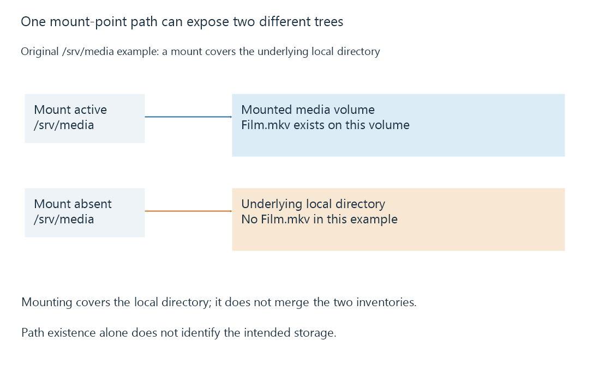

Mount points and the file system behind a path
A mount point attaches a file system to a pathname, so the same visible path can expose different data when the mount state or namespace changes.
A mount attaches a file system at a location in a directory tree. On a Linux server, /srv/media might expose a local disk or an NFS share. On Windows, storage can be reached through drive letters or supported mounted-volume paths.
The text of the path is only part of its identity. Which file system is mounted there, and which namespace the process sees, determine the content behind it.
A mounted directory covers what was underneath
Suppose the local root file system already contains the directory /srv/media. Mounting another file system there makes lookups enter the mounted tree. The underlying local directory is covered, rather than merged with the new files.
An original state example is:
Mount active:
/srv/media/Film.mkv -> file on the media volume
Mount absent:
/srv/media -> underlying local directory
/srv/media/Film.mkv -> not found if that directory has no Film.mkv

Files already stored in the covered directory are not deleted by mounting another tree over it. They can become visible again when that covering mount is absent.
An absent mount can still leave a writable path
A recording or import aimed at /srv/media might write into the underlying local directory if the expected mount is absent and that directory permits writes. The application can then fill the wrong volume.
Similarly, an empty directory is not proof that the intended share is empty. It may be the uncovered directory. Compare mount or volume identity as well as path existence before interpreting the contents.
This is particularly important for a library inventory. A successful enumeration of the wrong empty directory is a different observation from a successful enumeration of the intended media volume.
The process has its own view
Linux mount namespaces let processes see different mount arrangements. A container can have /media mapped from a host path such as /srv/media. A service can also have namespace restrictions. Seeing a mount in an administrator's shell does not prove that the server process sees the same one.
The relevant check is whether the server's pathname resolves to the expected storage in its own execution environment. Ownership, directory traversal and remote credentials are later access checks; they do not correct a path that points at the wrong tree.
Library paths should identify the intended storage
In Emby, configure a library path that exists and remains meaningful in the server's environment. A viewer's desktop path is not automatically the server's path. If a volume reconnects under another drive letter or a container mapping changes, the old library path can refer to nothing or to something else.
Unavailable network mounts explains the additional distinction between an absent mount and a mount that is still present but cannot complete file operations.
See Also
- Unavailable network mounts and trustworthy library state
- Symbolic links and target-path resolution
- Storage access from background services